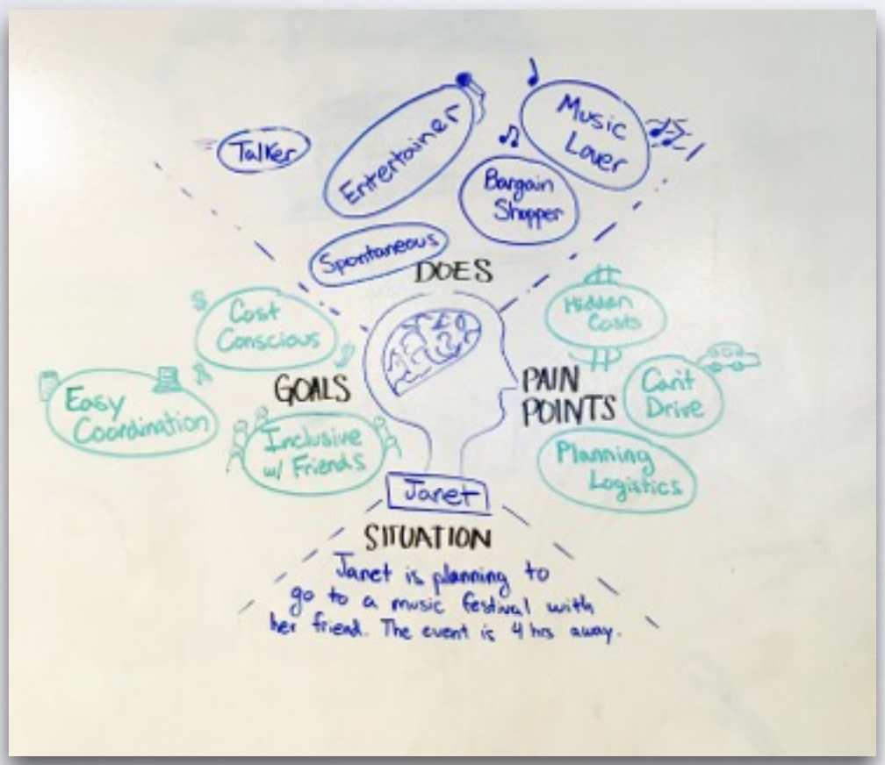
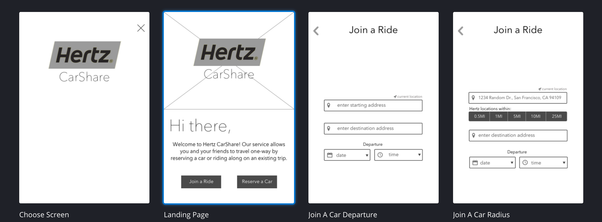
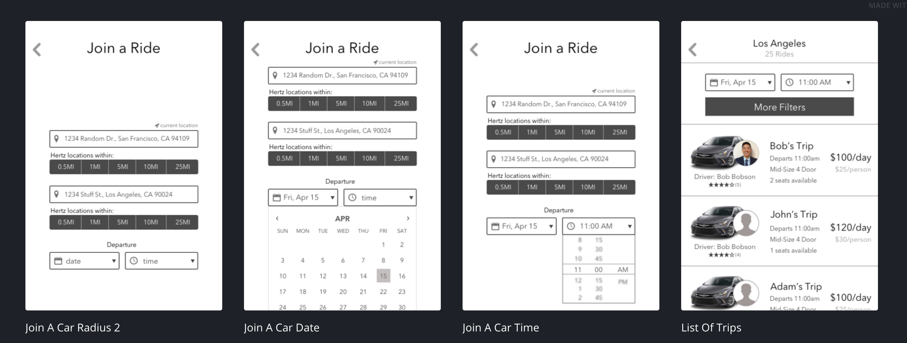

Problem Statement
Hertz is a very popular car rental services. Hertz has been seeing a steady decline in their 1-2 day aka short term rentals due to the emergence of share based care rental services like zipcar etc. Our goal is to build a ride sharing platform on top of the existing Hertz Infrastructure.
Finding what matters
Our research conduct that most of the people were unaware of the locations of the hertz, rather than creating a different app we thought to build a peer to peer carsharing service, that both drivers and riders can trust and rely on. We implemented a mobile app prototype that presents our idea. In our design and prototype implementation we emphasize on establishing trust and safety which is the the most important features that users cared about, based on our user research. We tried to implement mobile application that enables renter to locate and rent from nearby hertz locations, individual can select their ride going to the same location.
MVP
 